O mês bom
Chegou uma indicação, um cliente antigo voltou, um colega mandou um caso.
Nada mudou no seu processo.
Acesso restrito ao time da 1Nort Digital
Proposta Comercial · Marketing Jurídico
A 1Nort entrega leads filtrados, atendimento por IA e CRM jurídico organizado, pra você falar só com quem tem causa real, perfil e capacidade de fechar. Na área em que o seu escritório atua.
Quando o escritório vive de indicação, o faturamento sobe e desce sem explicação.
Chegou uma indicação, um cliente antigo voltou, um colega mandou um caso.
Nada mudou no seu processo.
O WhatsApp ficou quieto, a agenda esvaziou e a única estratégia é esperar.
Também nada mudou.
Sem fluxo constante de clientes, faturamento vira aposta. Contratar, investir ou crescer vira risco.
Previsibilidade não vem de sorte. Vem de processo.
Pensa nos últimos 6 meses: você sabe explicar por que o melhor mês foi bom e por que o pior foi ruim?
Tráfego pago calibrado por área e IA no WhatsApp filtrando quem tem causa real. Entrada constante, sem depender de indicação.
Você sabe qual anúncio gerou cada lead, cada reunião e cada contrato. Nada de "achismo" sobre o que funciona.
A campanha é ajustada com dado de contrato, não de clique. Cada mês fica mais previsível que o anterior.
Contamos com uma estrutura completa e integrada para atender escritórios de advocacia em todo o Brasil, com processos, tecnologia e pessoas focadas em entregar resultado.
Squad jurídico próprio dentro da 1Nort. Cada estratégia, criativo e funil é desenhado para advocacia e calibrado por área: trabalhista (reclamante e reclamada), previdenciário, bancário e consumidor.
Stack interna que move tudo: IA, CRM e automações conectados em tempo real, calibrados para a captação jurídica.
Sabemos o que é depender de indicação, perder lead pra concorrente que respondeu primeiro e ficar refém da boa vontade do estagiário no atendimento.
Quero compartilhar com vocês o resultado excelente de dezembro. Foram 31 contratos fechados na área trabalhista.
Esse mês eu organizei o WhatsApp, fiz mensagens para follow-up, o que melhorou. Hoje fechamos o nono contrato!
Mais resultados no nosso Instagram.
Do primeiro clique ao fechamento, com controle total do funil.
Demanda com causa real e potencial de contratar.
Qualificação e avanço automático dos leads.
Clareza do que vira reunião e contrato.
Seu time preparado para cada etapa do fechamento.
Modelo feito pela 1Nort para o Roberto Gago Advogados (RJ). A sua segue a mesma estrutura, com as suas áreas e a sua identidade.
Abrir a página no ar ↗Você não fala com quem não pode te contratar.
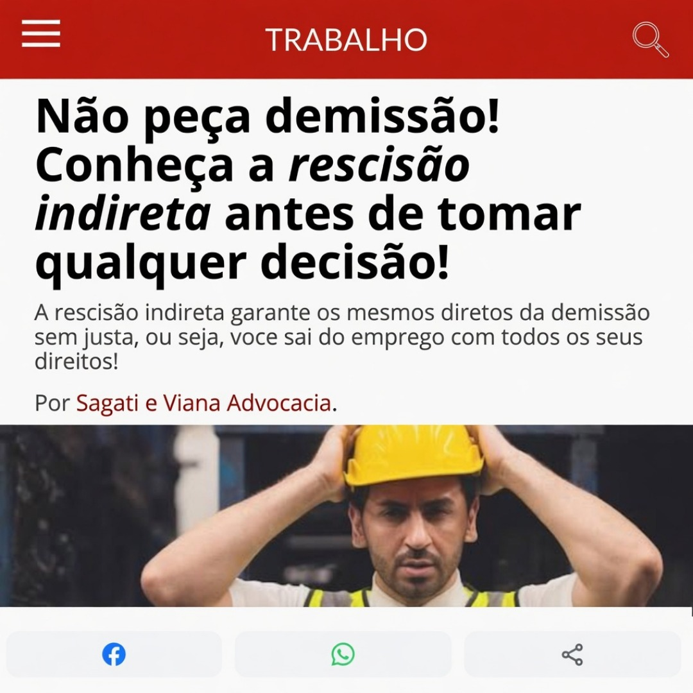
Aqui definimos se você atrai cliente… ou negociador.
Direto no CRM, com todas as respostas do quiz e os dados da campanha.

Cada lead é rastreado do anúncio até o contrato. Assim a campanha passa a buscar mais pessoas parecidas com quem realmente contrata.
Menos lead curioso, mais contrato. Quanto mais tempo roda, melhor fica.
Do primeiro “oi” ao “quero seguir”: a IA entende o caso, responde dúvidas, contorna objeções e mantém o lead avançando sem esfriar.
Atende em segundos, inclusive fora do horário comercial.
Identifica a causa, o perfil e os dados que o advogado precisa.
Entende a dúvida, responde com clareza e recupera o avanço.
Confirma a decisão e deixa o fechamento pronto para concluir.
Sua equipe recebe o histórico completo e entra só no fim: link de assinatura ou reunião com o advogado.
Não é CRM genérico adaptado pra advocacia. É a ferramenta que a nossa própria operação usa todo dia, e que o seu time aprende em uma reunião.
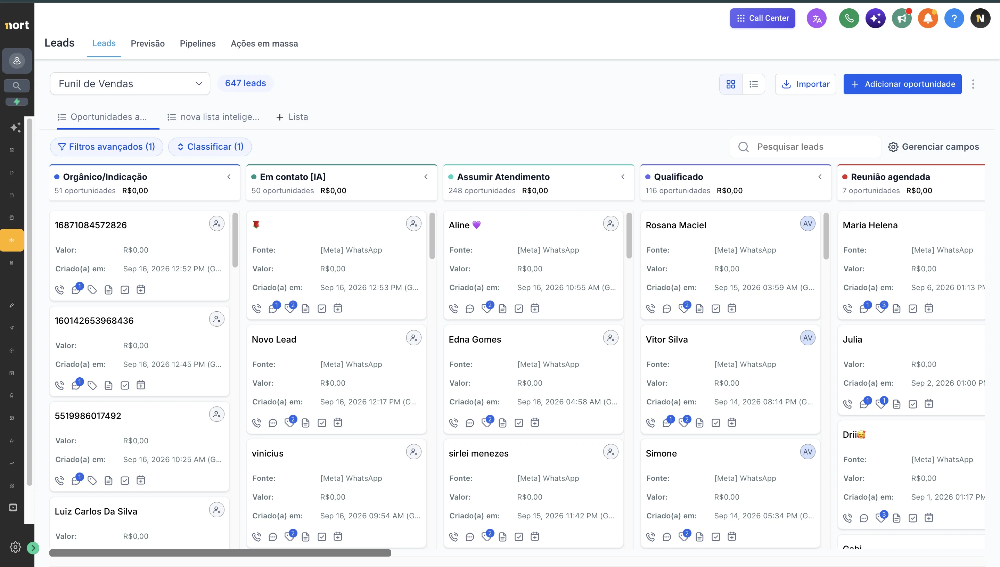
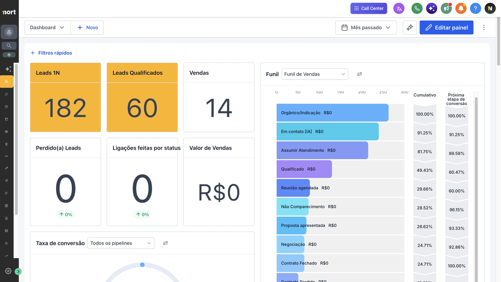
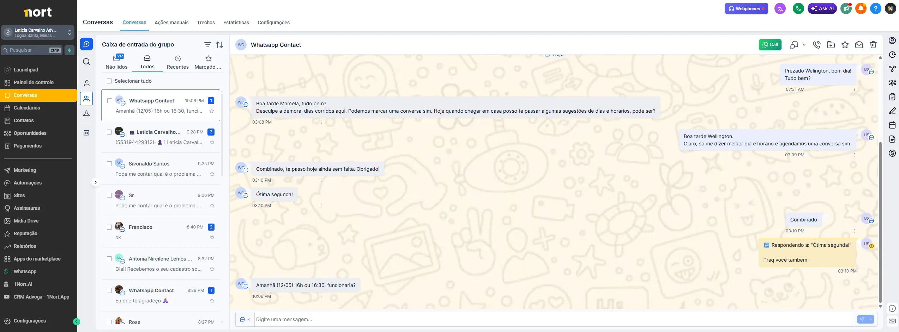
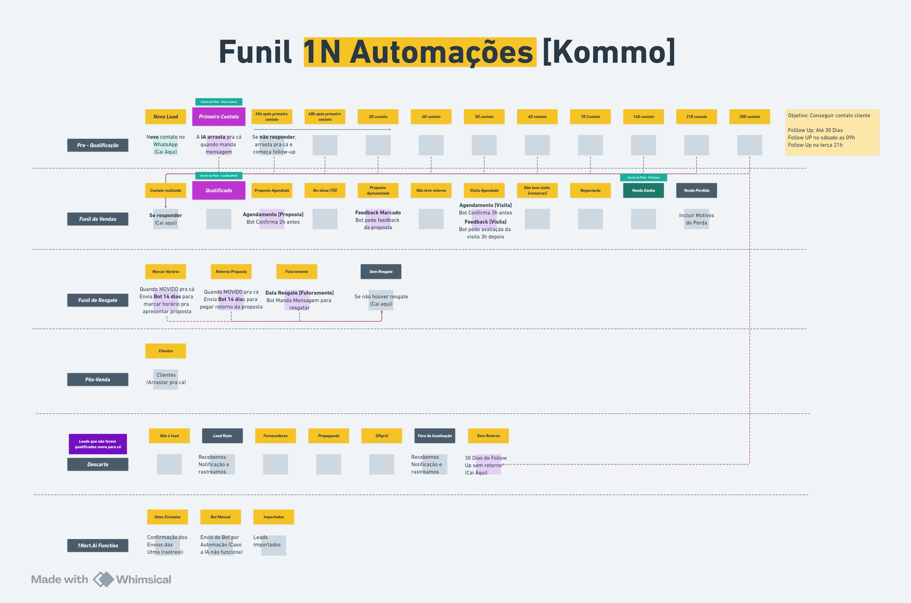
O escritório [Seu escritório] recebeu um Lead Ruim 😢
Luane - 1NortO usuário Dr. Leandro fechou um contrato! 🎉
R$300/mês
R$400/mês
R$500/mês
No portal da 1Nort você vê o que entrou, o que avançou e o que virou contrato, tudo numa tela só.
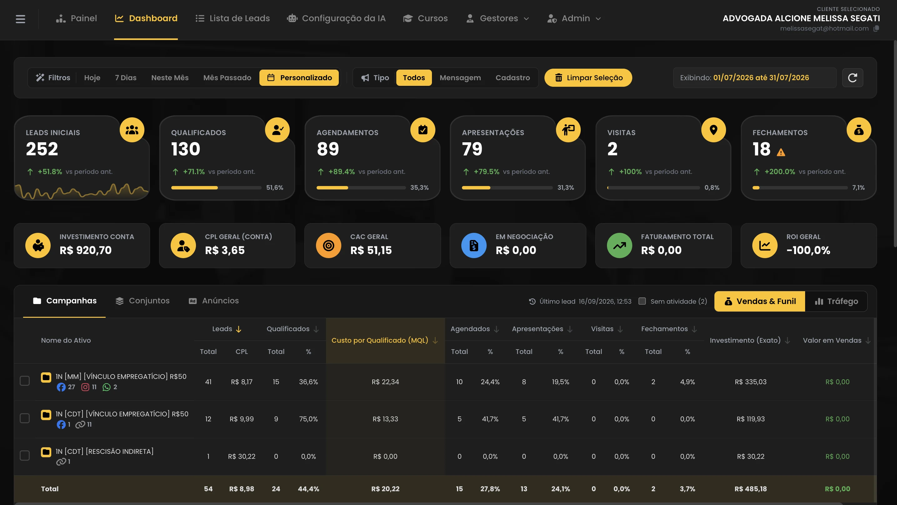
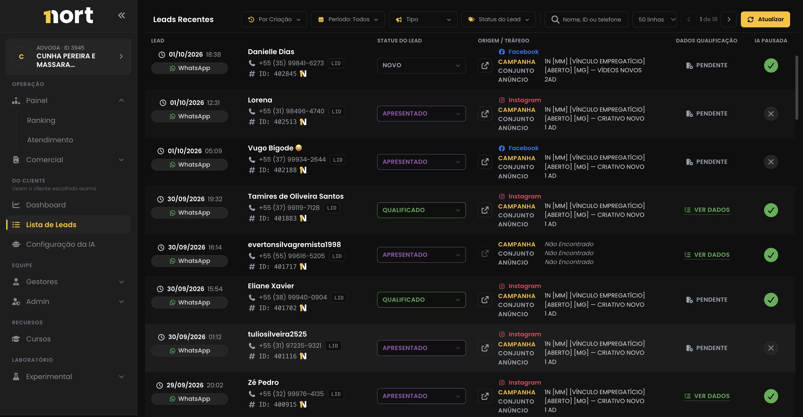
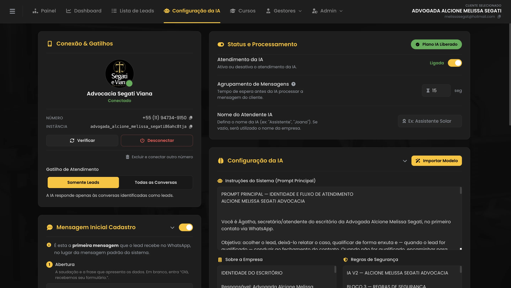
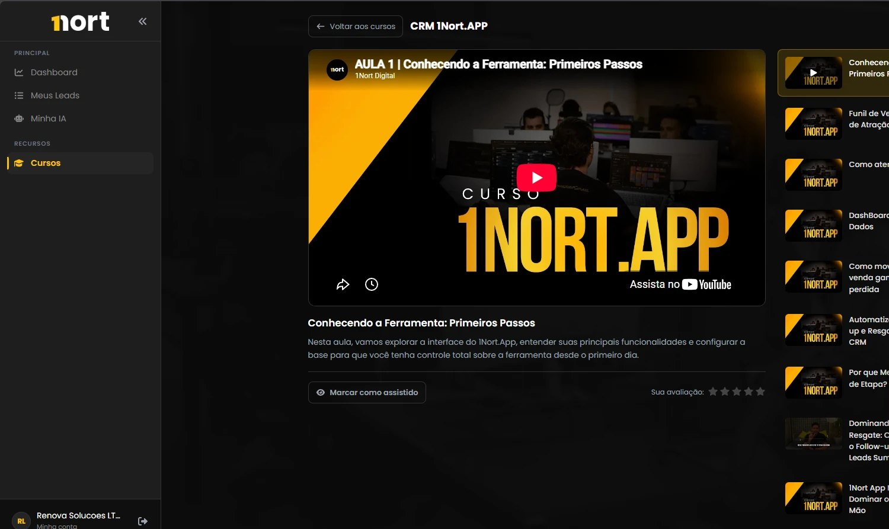
Clique na tela para ampliar.
Do lead ao contrato assinado: quem faz o quê, e em que momento.
 SDRAgendamento
SDRAgendamento CloserAdvogado responsável
CloserAdvogado responsávelVai direto pro Meta e Google, na conta e no nome do escritório. ≈ R$ 40/dia.
Quanto custa, em média, cada pessoa que chega pra avaliar o caso. Varia por área e região.
Quanto entra, em média, por contrato fechado na sua área.
A cada 100 contatos, quantos viram contrato. Padrão do mercado jurídico: 5% a 10%.
Projeção. Resultado real varia por área, região e velocidade de atendimento.
Soluções internas e exclusivas da 1Nort
Você recebe números, ajustes e próximos passos sem precisar perguntar.
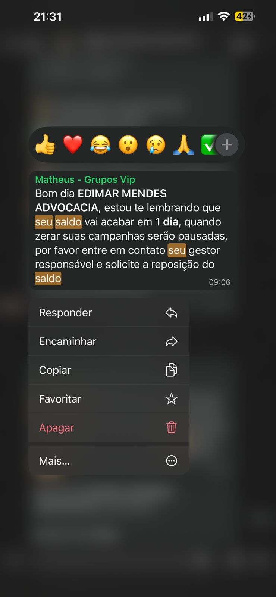
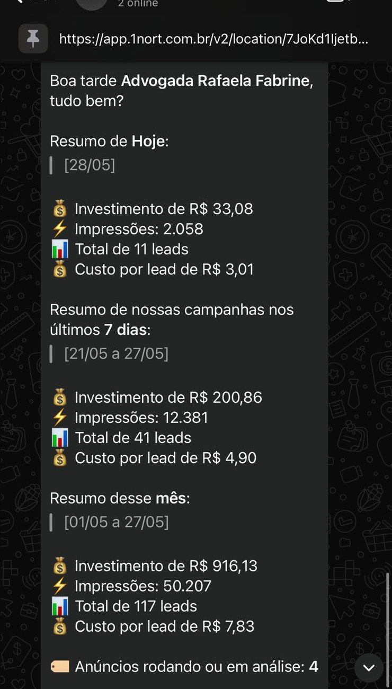
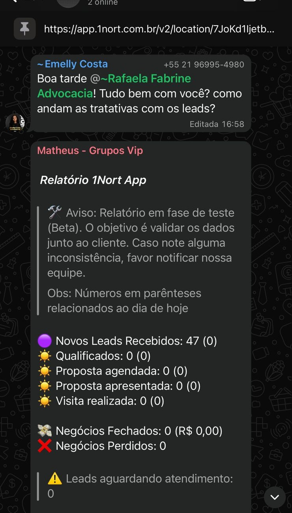
Não incluso: a verba de anúncio. Ela vai direto pro Meta e pro Google, na conta e no nome do escritório.
Esse é o momento de perguntar. Cada etapa que você viu pode ser ajustada à realidade do seu escritório.
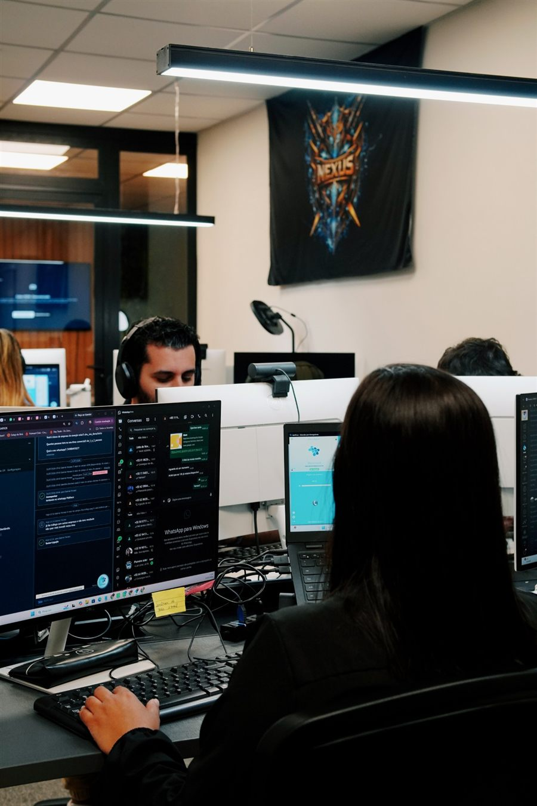
Filtrados por área antes de chegar no seu time, sem curioso atrás de consulta grátis.
Presença profissional do escritório no Meta e no Google, dentro das regras da OAB.
É um sistema completo de geração de demanda jurídica.
O lead recebe resposta em segundos e chega qualificado ao advogado.
Cada caso, cada conversa e cada agendamento em um só lugar.
Você vê quantos contratos entraram, o CAC e quanto cada campanha gerou.
Esse é o nosso compromisso com você desde o primeiro dia.
Implementação inicial parcelada + mensalidade fixa
No cartão de crédito
Cobrança mensal recorrente
Por 3 meses, cobrança mensal
À vista ou em 6x de R$ 833,33 no cartão
Sem custo de implementação
CRM + Chatbot de IA + Pixel inclusos
Banco de imagens e vídeos testados em centenas de variações.